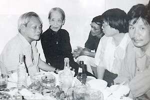

Phụ Lục 4

ôm 16-6, có một cú điện thoại gọi đến nhà lúc tôi đang ngủ trưa. Con gái lớn của tôi là Nguyễn thị Thanh Hương nhận điện. Bên kia đầu dây là một vài em học sinh cũ của tôi gọi đến tìm tôi. Những em học sinh này đã học với tôi cách đây 40 năm, nghĩa là vào năm 1956, khi tôi bắt đầu dạy ở trường trung học tư thục Tân Thịnh, do ông Phan Ngô làm giám học. Năm ấy vì quá bận công việc nhà báo nên tôi chỉ nhận làm giáo sư chính (bây giờ gọi là giáo sư hướng dẫn) môn Việt văn một lớp đệ thất và môn Pháp văn một lớp 6 è Moderne. Trong cuộc đời dạy học của tôi, nếu hỏi thời kỳ nào tôi có nhiều kỷ niệm êm đẹp nhất thì có lẽ đó chính là thời kỳ tôi dạy ở Tân Thịnh.

Các nhà văn nhà thơ đến thăm Bà Tùng Long nhân dịp sinh nhật 86 tuổi của bà (từ trái sang Nguyễn Quang Sáng, Đỗ Trung Quân, Nguyễn Nhật Ánh, Lê Minh Quốc). Ảnh từ "Hồi ký Bà Tùng Long".
Đám học sinh của tôi cả nữ lẫn nam đều thật dễ thương, mà dễ thương nhất có lẽ là những học sinh thuộc chương trình Pháp-Việt của niên khóa này. Sau niên khóa này tôi còn dạy thêm cả năm, sáu năm nữa ở Tân Thịnh và ở cả Đạt Đức (ông Phan Thuyết làm hiệu trưởng), Les Lauriers (ông Chơn lên làm hiệu trưởng sau khi ông Ngô đi làm hiệu trưởng trường Văn Hiến).
Đến năm 1963, tôi phải nghỉ dạy vừa vì lý do sức khỏe vừa vì công việc quá đa đoan cứ phải đi công tác ở các tỉnh, lại thêm có chân ở nhiều đoàn thể, nhiều Hội phụ huynh học sinh... Khi tôi nghỉ dạy thì học sinh ở lớp đầu tiên này (1956) có em đã ra đời, có em còn tiếp tục học đại học. Thầy trò ít có cơ hội gặp nhau. Thỉnh thoảng các em đến thăm tôi vào dịp Tết mà thôi. Rồi năm 1974 tôi không còn ở cư xá Chu Mạnh Trinh, dọn về sống với Thanh Hương ở cư xá Sicovina. Tôi lại nghỉ viết và chỉ ở nhà lo việc gia đình, vì vậy một số học trò cũ của tôi dù muốn gặp tôi cũng không biết tìm tôi ở đâu.
Rồi 30-4-1975 đến, sự phân tán càng nhiều, dâu bể bể dâu, vật đổi sao dời, phần ai nấy lo cho cuộc sống trước một sự thay đổi quá lớn. Một số học trò cũ và độc giả cứ tưởng tôi đã bỏ nước ra đi, cho đến những nhà văn nhà báo các bạn đồng nghiệp cũ cũng đều in trí là tôi đã đi khỏi đất nước Việt Nam rồi.
Nghề dạy học luôn được tôi xem là nghề tay mặt, còn viết văn chỉ là nghề tay trái mà thôi. Khi dạy học, tôi luôn để hết tâm trí vào việc giảng dạy, với ước mong các em học sinh của mình ngày sau phải là những người hữu ích cho đời, cho xã hội. Dù dạy cho các trường tư thục, tôi vẫn dạy hết sức tận tình, lúc nào cũng tự khuyên mình phải làm một nhà mô phạm như các bậc thầy của tôi ngày xưa. Vì vậy ngoài bài vở ra, tôi còn dạy các em về cách đối xử ngoài đời. Việc này không khó lắm cho tôi vì tôi dạy hai môn văn chương Việt Pháp, có đủ thì giờ để nói dông dài, Đông Tây Nam Bắc, thời xưa thời nay, chớ không phải chỉ nói đến những con số, những công thức này công thức nọ như các giáo sư dạy Toán hay Lý Hóa. Có lẽ vì vậy mà tôi gần với học sinh hơn. Và mặc dù đã nghỉ dạy trên 30 năm, tôi vẫn không quên các em học sinh của tôi, thỉnh thoảng có dịp là tôi lại nhắc. Cũng có lẽ vì vậy mà giữa các em học sinh và tôi mới có được sự đồng giao cách cảm để ngày nay sau 40 năm, khi các em đã là những giáo viên, hiệu trưởng, công chức về hưu, những kẻ đã thành công trên thương trường hay đang vất vả vật lộn với cuộc sống..., vẫn chưa quên tôi, tìm đến tôi trong ngày một số em cùng sinh trong tháng 6 tổ chức sinh nhật chung, mời tôi đến dự.
Tôi đã quá già rồi, năm nay đã 81 tuổi, từ lâu không dự tiệc tùng nữa. Thời trẻ đã dự quá nhiều rồi, ở đời việc gì cũng phải theo luật bù trừ phải không các bạn? Vậy mà tôi rất vui khi nhận lời mời, làm sao từ chối một đám học sinh cũ mà mình đã để bao tâm huyết ra dạy, đã đặt bao kỳ vọng nơi các em, và ngày nay các em đã thành đạt trên đường đời, trong gia đình đã là ông bà nội, ngoại.
Em Chúc đứng ra làm tiệc, một tiệc chay rất khéo, rất linh đình với bánh sinh nhật, và đi rước tôi bằng xe taxi. Hôm ấy trời lại mưa lất phất khiến lòng người, lòng thầy trò chúng tôi cùng se lại. Các em đã đón tôi với sự nồng nhiệt và cũng như ngày nào, những cặp mắt đầy thân yêu lại hiện ra, mừng rỡ. Tôi đến bữa tiệc mà như đến lớp học, vào ngày tôi còn dạy lớp đệ thất Tân Thịnh, hay lớp 6 è Moderne. Em Tôn dìu tôi vào phòng tiệc và la lớn: “Cô đến!”. Thế là các em ùn ùn ra đón, trong khi em Châu chạy tới chạy lui quay phim chụp hình. Có khác nào ngày xưa khi các em tổ chức lễ Tân niên và kéo nhau đi mời tôi đến dự vì tôi là giáo sư chính cả hai lớp.
Cảnh hội ngộ mừng vui nói sao cho xiết! Các em lo bày tiệc, mời tôi và các bạn ngồi vào bàn rồi cử một em đứng ra nói vài lời, tôi đáp từ và mừng những em cùng có sinh nhật trong tháng 6 này.
Các em bảo tôi không thay đổi, 82 tuổi mà chưa già nhiều, còn phong độ... Nhiều giáo sư cùng dạy với tôi ở Tân Thịnh đã qua đời. Kẻ chết ở Việt Nam như Nguyễn Hữu Chỉnh, Phan Ngọc Châu, Nguiễn Hữu Ngư, Thái Châu... Người chết ở nước ngoài như Trịnh Chuyết ở Tây Đức, Lê Đình Duyên ở Mỹ... Tôi sống lâu, nên mới có ngày nay, một ngày đáng nhớ.
Trong buổi tiệc, tôi để ý đến một em. Đó là em Hồ thị Vinh, học với tôi ở đệ thất, rất đẹp và có tật ở chân. Tôi để ý đến em vì thấy ở em có một nỗi buồn gì đó mà không thể tâm sự cùng ai được. Trong khi nhìn các em khác, tôi thấy nhiều em hân hoan vui vẻ ra mặt. Sau đó tôi đã hỏi riêng một em và hiểu cuộc đời của em Vinh đã không được may mắn như các em khác. Vẫn biết với nhà Phật, mọi sự đều vô thường, có đó rồi mất đó, nhưng ở em Vinh, khi tôi về nhà nằm nghỉ vẫn thấy một chút bùi ngùi thương cảm. Không phải ai đem tận tâm tận lực ra làm một việc gì đó, đeo đuổi một chí hướng nào đó, đều hưởng được thành công. Mưu sự tại nhân mà thành sự tại thiên cũng là vậy!
Bữa tiệc hôm ấy đã làm tôi thật cảm động trước tình cảm của các em, trước niềm vui mà Trời Phật, số phận đã dành cho tôi trong lúc tuổi già bóng xế. Dạy học, lại dạy ở trường tư như tôi, mà được học sinh yêu thương như vậy, tôi thiết tưởng cũng là một vinh dự lớn lao cho mình. Nhân buổi tiệc này, khi về nhà tôi đã nghĩ thật nhiều về các em và bỗng có ý nghĩ nên viết cho em Hồ thị Vinh một bức thư - vì em không có điện thoại nên tôi không thể nói chuyện với em được. Viết cho Hồ thị Vinh tức là viết cho các em, các em chắc cũng hiểu thâm ý của tôi. Và tôi đã viết:
Em Hồ thị Vinh thương,
Trong buổi họp mặt sinh nhật của các em, cô được mời đến dự. Mặc dù đã 82 tuổi, sức khỏe không cho phép, cô vẫn ráng đến để gặp lại những học sinh cũ mà cô rất thương khi còn dạy và khi xa các em rồi cô vẫn luôn nhớ đến với bao kỷ niệm êm đềm. Hôm ấy cô thật sự cảm động và nhớ lại cả một quãng đời rất đẹp của mình khi còn cầm viên phấn đứng trên bục giảng nhìn xuống các em, với những cặp mắt thông minh ham học đang nhìn lại cô chăm chú. Ôi! Thật là một quãng đời đáng nhớ, một quãng đời mà không một cái quí giá trên đời này có thể đổi lấy được. Những khuôn mặt của các em quen thuộc với cô quá. Hồi cô còn dạy, còn trẻ, cô nhớ từng tên các em cả họ lẫn chữ lót, cả chỗ từng em ngồi trong lớp ở bàn nào, dù là bàn đầu hay bàn chót. Vậy mà bây giờ, những khuôn mặt ấy cô vẫn còn nhớ, nhưng tên thì em nhớ, em quên. Thời gian có bao nhiêu cái hay, nhưng lại có cái dở đó các em ạ. Với khoảng thời gian dài 40 năm, với một số học trò quá đông đúc qua gần 10 năm cô đứng lớp, các em cũng hiểu cô làm sao mà nhớ cho hết phải không các em?
Tất cả các em đều để lại trong lòng cô một tình thương bao la sâu đậm và cũng chính tình cảm này đã nuôi dưỡng cô đến ngày nay, giúp con người cô vẫn còn phong độ trong lúc tuổi già. Nhưng riêng với các em, em Hồ thị Vinh thân mến, cô vô cùng cảm động nhìn thấy sự hân hoan hiện rõ lên nét mặt của em khi em nhìn cô. Sự hân hoan này các em khác cũng có, nhưng không bộc lộ một cách tự nhiên như em. Em nhìn cô rồi ôm hôn cô, em lại cầm bàn tay đã già nua, nhăn nheo của cô mà vuốt ve từng ngón tay. Cái bàn tay ấy ngày xưa đẹp biết bao em nhỉ? Khi bàn tay cô cầm viên phấn đặt lên bảng đen để viết những nét chữ thì bàn tay ấy đâu phải nhăn nheo như bây giờ phải không em Vinh?
Cô thương các em quá, cám ơn các em đã cho cô cái dịp quí hóa này để gặp lại các em, để nhớ một thời tươi đẹp của mình.
Về đến nhà, đầu óc đã gần đi vào sự quên lãng của cô đã hồi phục nhớ lại tất cả những khuôn mặt thân thuộc ngày nào, những khuôn mặt đã giúp cô đứng vững trong thời gian trẻ còn nhiều vất vả. Nhớ đến các em, nhớ đến em Hồ thị Vinh bé bỏng của cô ngày nào, cô ngồi lại bàn viết cho em - viết cho em tức là viết cho tất cả các học sinh cũ để ghi lại một kỷ niệm êm đềm của cuộc đời người cầm viên phấn đứng trên bục giảng và cầm bút để viết những gì mà mình mong mỏi con người đi vào đường thiện mỹ.
Cô viết cho em vì nhìn vào bảng danh sách của Tôn đưa, cô thấy em không để số điện thoại, nên cô không thể nói chuyện với em qua điện thoại như các em khác. Lúc em rảnh hãy nhớ lời hứa với cô nhé. Hãy đến thăm cô với vài người bạn nữa. Khi cô ngồi trên bàn dạy, dưới mắt cô, tất cả các em dù ở hoàn cảnh nào đi nữa thì cũng đều bình đẳng. Bây giờ điều đó vẫn không hề thay đổi. Thành đạt hay không thành đạt, cô vẫn dành cho các em tình cảm như nhau, nếu không muốn nói là cô càng thương hơn những em không gặp được may mắn trong cuộc sống.
Cô thăm em và chúc em vượt qua tất cả mọi sự, mọi việc không vừa ý. Thân ái (Viết và gởi ngày 23-6-1996)